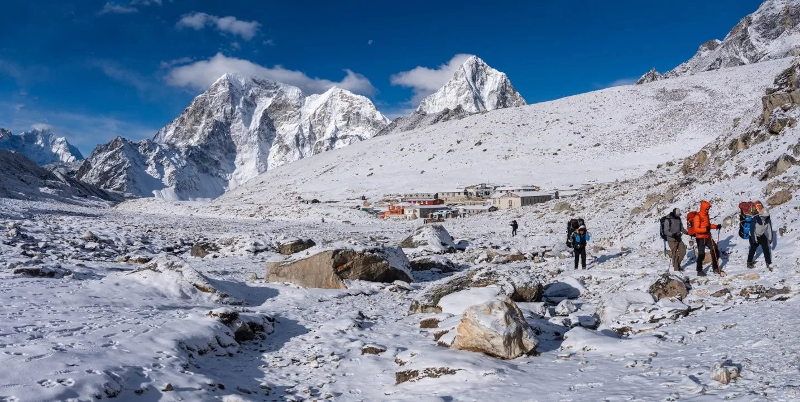

1. The 15kg Flight Constraint & Strategic Packing Philosophy

Every piece of gear you bring to the Everest region must pass through a strict logistical gate: the twin-engine aircraft (Twin Otter or Dornier) flying into Tenzing-Hillary Airport in Lukla.
Airlines strictly enforce a 15-kilogram (33 lbs) total weight allowance per passenger. This is officially allocated as:
- 10 kg (22 lbs) Checked Baggage: Your main 80–90L heavy-duty duffel bag, which is assigned to your porter or pack animal at the Lukla airstrip.
- 5 kg (11 lbs) Carry-On Daypack: The 28–35L backpack you will wear while walking each day, containing layers, rain jacket, water, camera, passport, and medications.
While you can pay minor excess baggage fees (~$1.50 to $2.00 per extra kilogram) if flights are not weight-restricted, packing light is an ethical and safety imperative. Porter welfare regulations enforce a maximum load limit of 20kg to 25kg per porter (one porter carries duffel bags for two trekkers). Carrying useless luxuries places an unfair burden on local mountain workers and makes your own daily walking miserable.
The City Storage Hack
You do not need to haul your city clothes, laptop, cotton jeans, and international flight suitcases to Everest Base Camp. All partner hotels and the Igloo Himalaya Treks operations office in Kathmandu provide secure, free luggage storage lockers. Leave all non-trekking items behind in Kathmandu.
2. The 4-Layer Alpine Clothing System Explained

Along the 130-kilometer trail, you will experience a staggering 40-degree Celsius temperature swing. At midday in the lower valleys of Phakding, the temperature can hit +22°C (72°F) under strong high-altitude solar radiation. At 4:00 AM on Kala Patthar, temperatures plummet to -20°C (-4°F) with howling glacial winds.
Instead of relying on one massive, bulky coat for everything, alpine mountaineers use the 4-layer system:
- Base Layer (Next-to-Skin): Wicks sweat away from your skin immediately. Moisture is the number one enemy in the mountains; if sweat stays trapped against your skin, your core temperature collapses into hypothermia the moment you stop walking. Use 200–250g merino wool or polyester synthetics. Never cotton.
- Mid Layer (Active Insulation): Traps warm air generated by your muscles while allowing vapor to breathe outward during steep uphill climbs. A breathable grid fleece or lightweight 100-weight synthetic pullover is ideal.
- Insulating Layer (Static Warmth): A high-loft down or synthetic jacket put on immediately during rest breaks, lunch stops, inside unheated teahouses, and for the frigid summit push.
- Outer Shell Layer (Weather Armor): A 3-layer waterproof and windproof jacket and pants (Gore-Tex, eVent, or Pertex Shield). It creates an impenetrable barrier against piercing Himalayan winds and sudden blizzards.
3. Upper Body Layering: From Tropical Sun to -20°C Dawn

Here is the precise inventory of upper body garments required for your 14-day expedition:
| Item | Quantity | Recommended Specs | Why It Is Crucial |
|---|---|---|---|
| Merino Wool Long-Sleeve Tops | 2 – 3 | 200 – 250 g/m² (Icebreaker, Smartwool) | Naturally antimicrobial; can be worn 5 days without odor; excellent warmth-to-weight |
| Quick-Dry Short-Sleeve Shirts | 2 | Synthetic polyester or light merino | For warm lower elevation walking days between Lukla, Phakding, and Namche |
| Mid-Layer Fleece Jacket / Pullover | 1 – 2 | Polartec Power Grid or 200-weight fleece | Breathable warmth during active climbing up Namche hill and Thokla pass |
| Heavy Down Expedition Jacket | 1 | 800+ fill power down, box-wall baffles, hood | Vital for evening dining halls, Gorak Shep nights, and the 4:00 AM Kala Patthar climb |
| Hard Shell Waterproof Jacket | 1 | Gore-Tex Pro or 3-layer laminate with pit zips | 100% windproof protection against biting Khumbu gales; rain and snow shell |
4. Lower Body & Legwear: Trekking Pants, Thermals & Waterproofs
Your legs do the hard work of ascending 6,000 cumulative vertical meters. Proper legwear must balance unrestricted joint articulation, abrasion resistance against sharp rocks, and thermal protection:
- Trekking Pants (2 Pairs): Lightweight, quick-drying nylon or softshell pants with four-way stretch (such as PrAna Stretch Zion or Arc'teryx Gamma). Convertible zip-off pants are popular for shedding lower legs in warm river valleys.
- Thermal Base Layer Leggings (2 Pairs): Merino wool leggings (200g weight). You will sleep in one clean dry pair every night and wear the second pair beneath your trekking pants on cold mornings above Dingboche.
- Waterproof/Windproof Shell Pants (1 Pair): Lightweight Gore-Tex or DWR-treated rain pants with full side zips. Side zips allow you to pull them on over your boots in seconds when a sudden snow squall hits the moraine.
- Moisture-Wicking Underwear (4–5 Pairs): Synthetic athletic briefs or merino wool underwear (ExOfficio Give-N-Go or Smartwool). Never wear cotton underwear, which retains sweat and causes painful inner-thigh chafing.
5. Footwear Architecture: Boots, Trail Runners, Camp Shoes & Socks

Nothing ends an Everest Base Camp expedition faster than crippled, blistered feet. The terrain alternates between dry stone steps, wet riverbed boulders, frozen mud, and loose glacial scree.
Trekking Boots Requirements
- Ankle Support: Mid-cut or high-cut boots (e.g., Lowa Renegade, Salomon Quest 4, Scarpa Zodiac). Carrying a pack over unstable glacial rubble at Gorak Shep demands torsional ankle stiffness.
- Waterproof Membrane: Gore-Tex or equivalent lining to keep feet dry when stepping through slush and mountain streams.
- Outsole: Deep Vibram lugs for traction on frozen gravel and loose shale.
- Break-In Rule: Put at least 50 kilometers (30 miles) of hiking on your boots before arriving in Nepal. Stiff new boots guarantee agonizing heel blisters.
Camp Footwear & Socks
- Camp Shoes (1 Pair): Lightweight slip-on trail runners, sandals, or down booties. Taking your heavy boots off the minute you arrive at the teahouse allows your feet to dry and air out.
- Merino Wool Trekking Socks (4 Pairs): Heavyweight cushioned merino wool socks (Darn Tough or Smartwool Mountaineering). Wool cushions impact, prevents friction blisters, and maintains warmth when damp.
- Thin Liner Socks (2 Pairs): Optional synthetic liner socks for trekkers prone to friction blisters.
- Microspikes (1 Pair): Lightweight slip-on traction chains for icy moraine sections between Lobuche and Base Camp, especially in spring and late autumn.
6. Handwear & Headwear: Extremity Protection from Sun & Frostbite
At 5,000 meters, ultraviolet radiation increases by 10% to 12% for every 1,000 meters of elevation, and snow reflects up to 85% of solar rays. Simultaneously, peripheral blood circulation drops in sub-zero winds. Protecting your head and hands is vital:
- Glacier Sunglasses (Category 3 or 4 UV): Standard fashion sunglasses are dangerously inadequate. Snow blindness (photokeratitis) is an agonizing burn of the cornea caused by solar glare on the Khumbu Glacier. Ensure your glasses feature 100% UV protection and side shields (Julbo, Oakley Clifden).
- Wide-Brim Sun Hat: Essential for protecting your ears, face, and neck during high-UV daytime ascents between Lukla and Dingboche.
- Warm Beanie / Toque: 100% merino wool or fleece-lined winter hat that covers your ears completely. You will sleep in this on high-altitude nights.
- Buff / Neck Gaiters (2 Pieces): Crucial for filtering freezing, dusty mountain air. Inhaling dry, frigid air without a buff causes the notorious 'Khumbu Cough' (a violent bronchial spasm caused by dried mucus membranes).
- Layered Gloves System:
- Liner Gloves (1 Pair): Lightweight touchscreen-compatible merino or fleece gloves for daytime hiking and handling camera gear.
- Heavy Mountain Mitts (1 Pair): Insulated, windproof, waterproof ski or mountaineering mitts (Black Diamond Guide or Hestra). Mittens keep fingers warmer than separated finger gloves during the -20°C dawn ascent of Kala Patthar.
7. Sleep System: Down Sleeping Bags, Liners & Teahouse Beds
Teahouse bedrooms are unheated wooden boxes with zero wall insulation. The bedroom window glass frequently glazes with thick frost inside by midnight. While lodges provide foam mattresses, cotton sheets, and pillows, the provided blankets are thin, heavy, and often damp from high-altitude humidity.
A high-performance four-season sleeping bag is non-negotiable for comfort and survival.
| Specification | Recommended Standard | Why It Matters |
|---|---|---|
| Comfort Rating | -15°C to -20°C (0°F to -4°F) | Inside room temperatures at Gorak Shep frequently drop to -10°C to -15°C |
| Insulation Type | 800+ Fill Power Hydrophobic Down | Down provides the highest warmth-to-weight ratio and compresses small into your duffel |
| Sleeping Bag Liner | Silk or Thermolite Fleece Liner | Adds +3°C to +5°C of warmth and keeps your sleeping bag interior clean |
| Compression Dry Sack | 15L – 20L Roll-Top Waterproof Bag | Guarantees your sleeping bag stays 100% dry even if porters hike through rain |
The Hot Water Bottle Trick
Every evening after dinner, ask the teahouse kitchen to fill your 1-liter uninsulated wide-mouth Nalgene bottle with boiling water ($2 to $3). Slip the hot bottle into a wool sock and slide it to the foot of your sleeping bag 20 minutes before bedtime. It heats your bag like an oven for 6 hours, and by morning, you have purified room-temperature drinking water ready to drink!
8. Packs & Bags: The 80–90L Waterproof Duffel vs. 30–35L Daypack

Managing your baggage on the trail requires understanding the clear division of responsibilities between your main expedition duffel and your personal daypack:
Main Duffel Bag (80L – 90L)
Carried by: Porters / Dzokyos (Inaccessible during the walking day)
- Heavyweight PVC / TPU waterproof duffel (e.g., The North Face Base Camp XL or Patagonia Black Hole).
- Contains: Sleeping bag, extra clothing layers, spare socks, toiletries, camp footwear, battery charging bank.
- Provided free: Igloo Himalaya Treks provides all booked clients with a heavy-duty 90L branded waterproof duffel bag to keep.
Personal Daypack (28L – 35L)
Carried by: You (On your shoulders for 5–8 hours daily)
- Must feature a supportive padded hip belt and integrated rain cover.
- Contains: 2 liters of water, waterproof shell jacket & pants, mid-layer fleece, warm gloves, beanie, sunscreen, lip balm, sunglasses, passport, cash, camera, and personal first-aid kit.
- Keep total daypack weight under 5 kg to 6 kg.
9. Electronics & Cold-Weather Battery Management
Extreme cold is kryptonite to lithium-ion batteries. In sub-zero temperatures, the internal chemical reaction slows down, causing phone and camera battery gauges to plummet from 80% to 0% in minutes.
Here is how to manage power and electronics across 14 remote days:
- High-Capacity Power Bank (20,000 to 25,000 mAh): Charging devices at teahouses costs $3 to $7 per charge in higher villages. Carrying a 20,000mAh power bank (Anker, Nitecore NB20000) provides 4 to 6 full smartphone recharges, saving you up to $40 in charging fees. Flight limit note: Aviation rules allow power banks up to 27,000mAh (100Wh) in carry-on luggage only; never pack batteries in checked duffels.
- Sleeping Bag Battery Storage: Every night, put your smartphone, camera batteries, headlamp, and power bank inside a soft pouch and place it inside your sleeping bag with you. Your body heat prevents the batteries from freezing and dying overnight.
- Headlamp with Spare Batteries: Essential for pre-dawn starts (3:45 AM for Kala Patthar) and late-night teahouse bathroom visits. Ensure it produces at least 300 lumens (Petzl Actik Core or Black Diamond Storm).
- Multi-Plug Universal Adapter: Teahouse charging stations have limited electrical sockets. Bringing a small 2-pin universal plug adapter or compact multi-port USB charger allows you to charge multiple devices from a single wall socket.
10. Hydration, Water Purification & Teahouse Refills
Because disposable plastic water bottles are banned throughout Sagarmatha National Park, having a robust personal hydration setup is mandatory:
| Hydration Gear | Recommended Model | Why It Is Essential |
|---|---|---|
| Wide-Mouth Water Bottles | Two 1.0-Liter Nalgene Bottles (BPA-free Tritan) | Wide mouth handles boiling water safely; accepts purification filters easily |
| Insulated Bottle Sleeves (Parkas) | Outdoor Research Water Bottle Parka | Prevents water from freezing solid into a block of ice during high-altitude walks |
| Hollow-Fiber Squeeze Filter | Katadyn BeFree 1.0L or Sawyer Squeeze | Fast, chemical-free filtration for village tap water during rest stops |
| Chemical Water Purification Tablets | Aquatabs or Katadyn Micropur Forte (Chlorine Dioxide) | Failsafe backup; kills all viruses, bacteria, and cysts without bad taste |
| Hydration Bladder (Camelbak)? | Not Recommended Above Namche | Thin hose and bite valve freeze completely solid within 20 minutes in freezing wind |
11. Personal Wilderness Medical & Toiletries Kit
While Igloo Himalaya Treks lead guides carry comprehensive expedition first-aid kits, pulse oximeters, and emergency medication, every trekker must carry their own personal daily medical kit:
Medications
- Diamox (Acetazolamide): 125mg or 250mg tablets (carry 15–20 tablets). Accelerates blood acidification, stimulating breathing during acclimatization. Consult your personal physician before departure.
- Ibuprofen / Paracetamol: Anti-inflammatory and pain relief for minor tension headaches and sore knees.
- Gastrointestinal Kit: Loperamide (Imodium) for acute diarrhea; Oral Rehydration Salts (ORS) packets; Ciprofloxacin or Azithromycin (prescription antibiotic for severe bacterial food poisoning).
- Throat Lozenges: Strepsils or Fisherman's Friend for soothing the harsh Khumbu cough.
Hygiene & Toiletries
- Blister Kit: Leukotape (the best medical tape on earth—sticks to sweaty feet without peeling), Compeed hydrocolloid patches, and sterile lancets.
- Biodegradable Wet Wipes (2 Packs): Above Namche Bazaar, hot showers are either freezing cold or cost $10. A daily 'Sherpa sponge bath' with warm wet wipes is how you stay clean and fresh.
- Hand Sanitizer: 2 bottles (60ml). Use vigorously before every meal and after every toilet visit to stop bacterial transfer.
- Sunscreen & Lip Balm: SPF 50+ broad spectrum mineral sunscreen and zinc-based lip balm. Reapply every 2 hours under intense mountain glare.
12. Gear Rental vs. Buying in Kathmandu (Thamel Gear Guide)

You do not need to spend thousands of dollars outfitting yourself before your flight to Nepal. The vibrant mountaineering district of Thamel in Kathmandu is the world capital of trekking gear shops.
Here is the strategic breakdown of what to rent, what to buy in Kathmandu, and what you MUST bring from home:
- Rent in Kathmandu ($1.50 – $2.50 / day):
- Heavy Down Jacket (800-fill): Top-rated local rental shops provide professionally laundered, high-loft down jackets for ~$2 per day with a refundable cash deposit.
- Four-Season Sleeping Bag (-20°C): Clean, lofty down bags can be rented for ~$2 per day. Pair it with your own silk liner for personal hygiene.
- Trekking Poles: Sturdy aluminum flick-lock poles rent for ~$1 per day.
- Buy in Kathmandu (Inexpensive & Readily Available):
- Merino wool beanies, fleece neck buffs, woolen gloves, liner socks, sun hats, crampons/microspikes, dry bags, Nalgene bottles, and Diamox/medications (available over the counter in Thamel pharmacies for pennies).
- Bring From Home (Never Compromise):
- Trekking Boots: Must be tried on in person, fitted properly, and thoroughly broken in months before your trip. Never buy or rent boots in Kathmandu.
- Technical Hard Shell Jacket: Counterfeit 'Gore-Tex' jackets sold in street stalls in Thamel are often cheap rubberized nylon that traps sweat like a sauna. Invest in authentic branded shells (Patagonia, Arc'teryx, Mountain Hardwear, Black Diamond) at home.
13. Comprehensive Printable Gear Checklist & Weight Audit
Use this complete checklist to weigh and verify your gear before packing your duffel and daypack. Target a total packed weight of 10 kg in your duffel and 5 kg in your daypack:
| Category | Item Description | Qty | Packed In | Estimated Weight |
|---|---|---|---|---|
| Sleep System | -20°C Down Sleeping Bag + Compression Dry Bag | 1 | Duffel | 1,450 g |
| Sleep System | Silk or Thermolite Sleeping Bag Liner | 1 | Duffel | 180 g |
| Outer Insulation | 800-Fill Expedition Down Jacket with Hood | 1 | Duffel / Daypack | 850 g |
| Weather Shell | 3-Layer Waterproof / Windproof Gore-Tex Jacket | 1 | Daypack | 420 g |
| Weather Shell | Waterproof Rain Pants with Full Side Zips | 1 | Daypack | 320 g |
| Mid Layer | Polartec Grid Fleece or Synthetic Pullover | 1 | Duffel / Daypack | 350 g |
| Base Layer | 200g Merino Wool Long-Sleeve Thermal Tops | 2 | Duffel | 480 g |
| Base Layer | 200g Merino Wool Long Thermal Bottoms | 2 | Duffel | 420 g |
| Trekking Pants | Stretch Nylon / Softshell Hiking Trousers | 2 | Worn / Duffel | 650 g |
| Footwear | Broken-in Waterproof Hiking Boots (Vibram sole) | 1 | Worn on flight | 1,200 g (worn) |
| Footwear | Camp Slip-on Shoes / Down Booties / Sandals | 1 | Duffel | 400 g |
| Footwear | Heavy Cushion Merino Mountaineering Socks | 4 | Duffel | 380 g |
| Hands & Head | Cat 4 Glacier Sunglasses + Sun Hat + Wool Beanie | 1 set | Daypack | 220 g |
| Hands & Head | Merino Liner Gloves + Insulated Mountain Mitts | 2 pairs | Daypack / Duffel | 280 g |
| Hardware | Telescopic Flick-Lock Trekking Poles | 1 pair | Duffel (flight) | 520 g |
| Hydration | Two 1L Wide-Mouth Nalgene Bottles + Parkas | 2 | Daypack | 460 g (empty) |
| Purification | Katadyn BeFree Squeeze Filter + Aquatabs | 1 set | Daypack | 140 g |
| Electronics | 20,000mAh Power Bank + Cables + Headlamp | 1 set | Daypack (lithium) | 580 g |
| Medical & Toiletries | First-Aid Kit + Diamox + Wet Wipes + Sunscreen | 1 set | Daypack / Duffel | 750 g |
14. Frequently Asked Questions About EBC Trek Packing
What is the luggage weight limit for the Lukla flight?
The strict domestic airline luggage limit is 15 kilograms (33 lbs) per passenger. This is normally divided into 10 kg for your checked duffel bag (carried by your porter) and 5 kg for your carry-on daypack. Excess baggage charges apply (approx. $1.50 to $2.00 per kg) if cargo space allows, but packing within the 15kg limit ensures safety and ethical porter treatment.
Can I rent a down jacket and sleeping bag in Kathmandu?
Yes, absolutely. Renting high-altitude gear in the Thamel district of Kathmandu is extremely common, reliable, and cost-effective. Heavy 800-fill down jackets and -20°C down sleeping bags rent for roughly $1.50 to $2.50 USD per day each, requiring a refundable cash deposit. Our Igloo Himalaya Treks team will personally escort you to vetted, high-quality gear rental shops in Thamel before departure.
What type of boots should I wear to Everest Base Camp?
You need mid-cut or high-cut waterproof trekking boots with sturdy ankle support, a Gore-Tex membrane, and a stiff Vibram lugged outsole. Trail running shoes are acceptable for experienced hikers in lower valleys, but boots are strongly recommended for the uneven, unstable glacial moraine and sub-zero temperatures past Lobuche. Most importantly: boots must be thoroughly broken in with at least 50km of walking before you arrive in Nepal.
Do I need crampons for Everest Base Camp?
You do not need heavy technical climbing crampons. However, bringing a lightweight pair of slip-on microspikes (traction chains with small teeth) is highly recommended, especially in spring (March–April) or late autumn/winter (November–December) when meltwater freezes into slick black ice along the moraine between Lobuche, Gorak Shep, and Base Camp.
Why can I not wear cotton on the trail?
In the outdoor world, the golden rule is "Cotton Kills." Cotton fibers absorb moisture, hold onto sweat, and dry extraordinarily slowly. When you stop walking at 4,000 meters in a sweat-soaked cotton t-shirt, the cold mountain wind rapidly chills your core, drastically accelerating the onset of hypothermia. Always choose merino wool or technical polyester synthetics.
What capacity daypack should I bring?
The optimal daypack capacity is 28 to 35 liters. This provides enough room for your rain shell, warm fleece, 2 liters of water, camera, sunglasses, sunscreen, warm gloves, and snacks, without being so bulky that it throws off your balance on narrow suspension bridges or rocky switchbacks.
How do I keep my phone and electronics charged on the trek?
Bring a high-capacity power bank (20,000 to 25,000 mAh). Keep your phone and power bank inside your inner jacket pocket during the day and inside your sleeping bag with you at night so freezing temperatures do not drain the lithium cells. Teahouses charge $3 to $7 to recharge devices from solar batteries, so your power bank will save you significant money.
What kind of sunglasses do I need?
You must wear Category 3 or Category 4 glacier sunglasses with 100% UVA/UVB protection and side shields. High-altitude UV radiation is intense, and snow and glacier ice reflect up to 85% of sunlight. Standard fashion sunglasses leave your eyes exposed to side glare, risking painful snow blindness (photokeratitis).

Ready to Experience the Himalayas?
Whether you are preparing for high-altitude trekking, cultural circuits, or alpine summit expeditions, start planning a bespoke journey tailored to your fitness, travel season, and style.